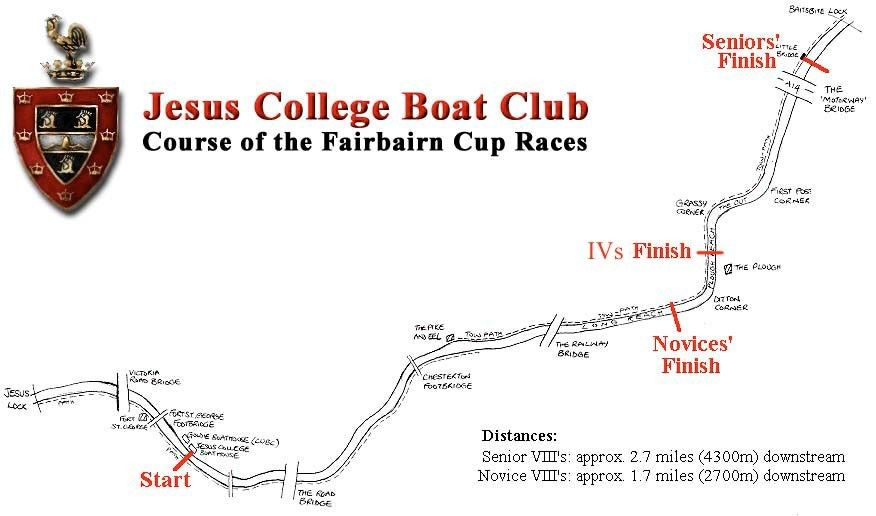

From an undistinguished start to eleven unbroken years at the head of the river, three Grand Challenge Cups and the home of the 'Jesus style' — the story of Cambridge's most successful college boat club.
Jesus College Boat Club was founded in 1827, but its first 45 years were somewhat undistinguished — no Henley wins, a lowly position in the May races and only six Blues. 1872 proved a turning point: the first VIII finished second on the river and carried off the Ladies' Plate from Henley.
The club then entered a golden age. In 1875 it reached the head of the river for the first time and stayed there for eleven consecutive years — a feat still unequalled by any other club. During those years the college won the Grand Challenge Cup at Henley twice (1879 and 1885), the Ladies' Plate five times, and the Stewards', Visitors' and Wyfold cups once each, producing seventeen Blues along the way.
Jesus College Boat Club is established — though its first 45 years are quiet ones.
The first VIII finishes second on the river and wins the Ladies' Plate at Henley.
Head of the river for eleven consecutive years — still unequalled. Two Grand Challenge Cups (1879, 1885) and seventeen Blues.
Fairbairn's return heralds a new era. The Lents headship is regained in 1905 and the river headship in 1909. 'Mileage makes champions.'
Founded on the Cam and still run by the club today — the longest head race in the University calendar.
The red and black hold both the Lents and Mays headships, win the Tideway Head by 20 seconds, the Marlow Grand, and a third Grand Challenge Cup at Henley.
D. L. Maxwell wins silver in the Olympic VIII and Chris Baillieu silver in the double sculls.
Women's rowing begins at Jesus and quickly rises to the top rank, taking the headship in 1993 and holding it in 1994.
W1 takes Head of the River in the Lents. In the Mays, 8 crews race, 5 get blades and none spoons — W1 blades to Headship again.
Steve Fairbairn's influence on rowing is hard to overestimate. He coined the phrase 'mileage makes champions', and the races he founded reflect it — the Tideway Head of the River (first run 1926) and the Fairbairn Cup on the Cam (1929).
The 'Jesus style' he coached focused on applying the weight of the body to the oar rather than pure muscle — 'rowing the blade into the water' so the weight was already moving before the oarsman took the strain. Many still talk fondly of 'bell notes', the sound the technique produced. Fairbairn and the JCBC were also at the forefront of the change from fixed to sliding seats.

Each Easter Term, college members who normally represent other Blues sports try their hand at rowing and compete in the May Bumps. These crews form the famous Rhadegunds (men) and Amazons (women) — a long-standing Jesus tradition.
With such a strong history behind us, we endeavour to continue this legacy into the future — with endless commitment and boundless smiles.
Adapted from The Jesus College Boat Club 1827–1994.
Join the most decorated rowing club on the Cam — no experience required.